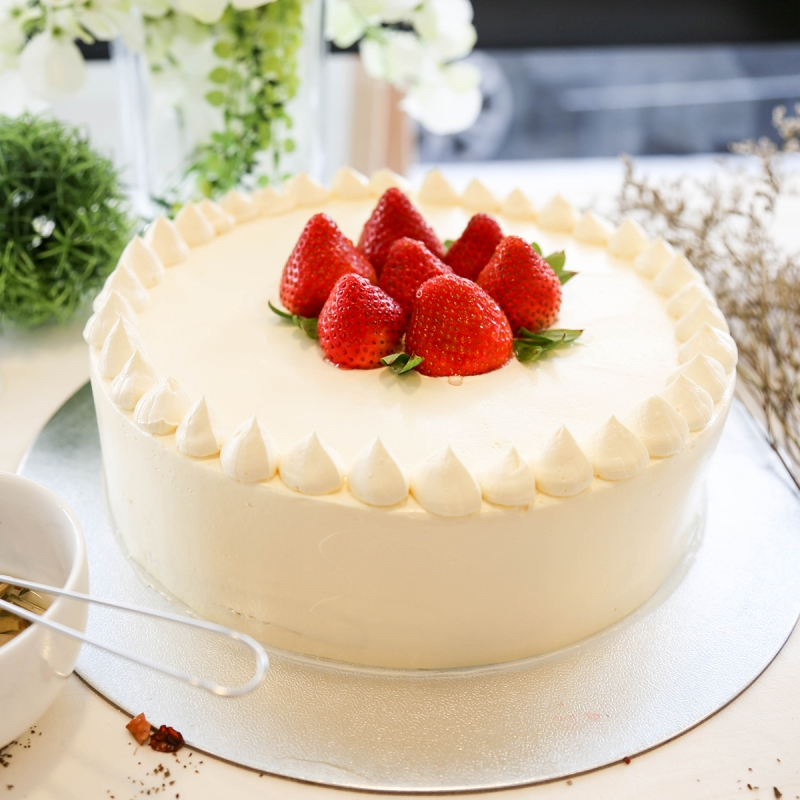

Strawberry Cake
- 1 cup pureed strawberries
- 1/4 cup 2% milk
- 6 eggs
- 1 tablespoon vanilla extract
- 1 3/4 cups white sugar
- 2 1/4 cups sifted cake flour
- 4 teaspoons baking powder
- 1 teaspoon salt
- 3/4 cup butter, softened
- 8 ounce cream cheese, softened
- 1/2 cup butter, softened
- 2 cups confectioners' sugar

Directions
- Preheat oven to 350 degrees F (175 degrees C).Grease and flour two 8-inch cake pans.
- Mix pureed strawberries, milk, eggs, and 1 tablespoon vanilla extract together in a small bowl; transfer to the bowl of a stand mixer. Beat flour, white sugar, baking powder, and salt into strawberry mixture on Low; add butter and continue beating on Low until evenly combined. Stop mixer, scrape sides, and beat again for about 30 seconds. Divide batter evenly between the two prepared cake pans.
- Bake in the preheated oven until a toothpick inserted into the center of each cake comes out clean, about 25 minutes. Cool the cakes in the pans for about 10 minutes; transfer to wire racks to completely cool, about 30 minutes.
- Beat cream cheese and butter together in a medium bowl until smooth. Gradually beat confectioners' sugar into cream cheese mixture until creamy and fluffy; stir in 1 teaspoon vanilla extract.
- Spread about 1/2 the frosting on top of 1 cake. Place second cake on top of frosting layer; spread the remaining frosting on top of second cake and around sides of both cakes.